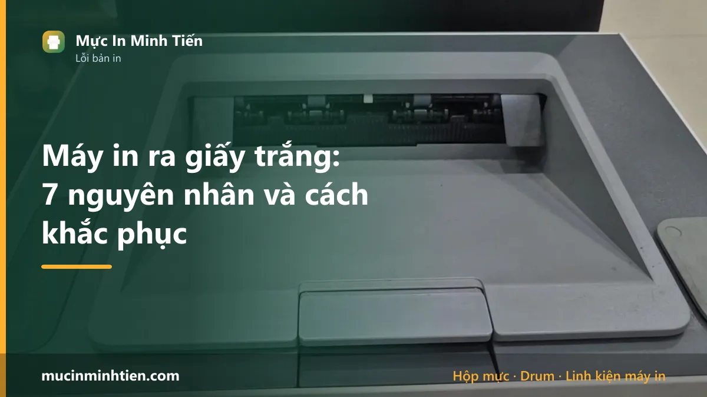
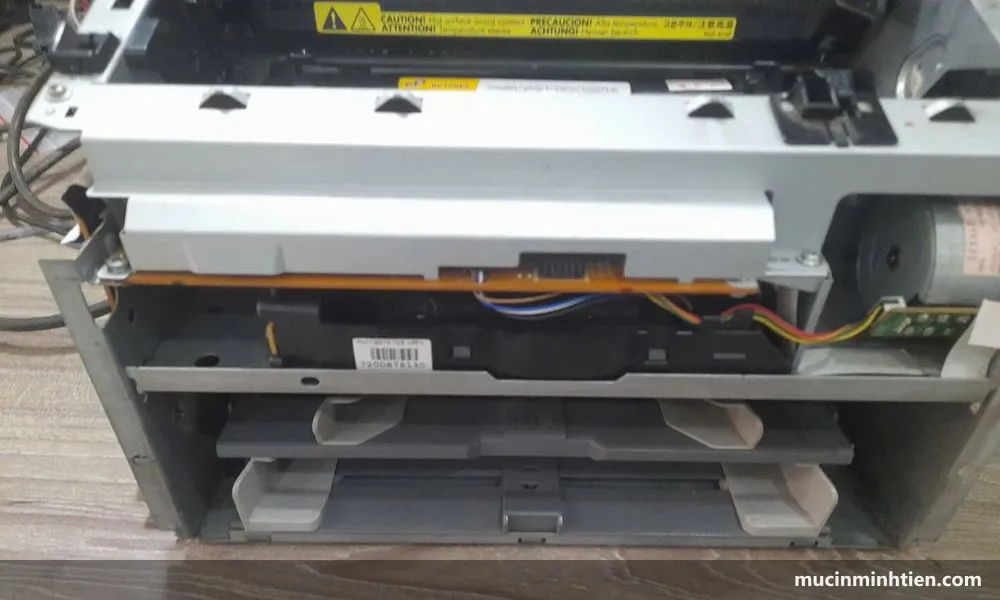

Máy in ra giấy trắng: 7 nguyên nhân và cách khắc phục

Máy in chạy bình thường nhưng giấy ra trắng thường do bảy nguyên nhân: quên gỡ seal hộp mực mới, hết mực, trục từ mất từ tính, drum mòn, cụm quang bị che, sai driver, hoặc lỗi file in. Việc đầu tiên nên làm là rút hộp mực ra kiểm tra seal — đây là nguyên nhân mất một phút để sửa và không tốn đồng nào.
Dấu hiệu nhận biết: ba kiểu giấy trắng khác nhau
Trước khi tháo máy, hãy xem giấy ra trắng theo kiểu nào. Ba kiểu này ứng với ba nhóm nguyên nhân hoàn toàn khác nhau, và phân biệt đúng ngay từ đầu tiết kiệm rất nhiều thời gian mò mẫm.
- Trắng hoàn toàn, mọi trang. Không một vệt mực nào. Thường là seal chưa gỡ, hết mực sạch, trục từ mất từ tính hoặc cụm quang bị che.
- Trắng xen kẽ với trang có chữ. Trang được trang không. Mực đang cạn và dồn lệch, hoặc trục từ mòn không hút đủ mực cho mỗi vòng.
- Trắng một phần trang, phần còn lại có chữ. Thường là trục từ mòn không đều, hoặc mực dồn về một phía trong hộp.
Một dấu hiệu phụ rất hữu ích: sờ tờ giấy vừa in ra xem có ấm không. Giấy ấm nghĩa là cụm sấy vẫn hoạt động và giấy đã đi hết đường dẫn — vấn đề nằm ở khâu tạo hình ảnh. Giấy nguội hoàn toàn thì nghi cụm sấy hoặc máy chưa thực sự in.
Bước 1 — Kiểm tra seal hộp mực, việc mất một phút
Nếu bạn vừa thay hộp mực mới rồi máy ra giấy trắng, dừng lại ở đây, gần như chắc chắn là seal. Đây là lỗi phổ biến nhất và cũng dễ sửa nhất.
- Tắt máy, mở nắp trước, rút hộp mực ra.
- Nhìn dọc hai bên thân hộp mực, tìm một đầu dải nhựa mỏng thò ra ngoài, thường màu cam, vàng hoặc trong suốt.
- Kéo thẳng và dứt khoát theo phương song song với thân hộp. Dải seal dài khoảng bằng chiều dài hộp mực.
- Kiểm tra thêm lớp nylon hoặc nắp nhựa bảo vệ mặt drum, gỡ nốt nếu còn.
- Lắc ngang hộp mực năm sáu lần rồi lắp lại và in thử.
Lưu ý: seal chỉ có ở hộp mực mới nguyên. Hộp mực đã qua nạp lại thì không còn seal, nên nếu máy đang dùng hộp nạp lại thì bỏ qua bước này và đi tiếp.
Bước 2 — Lắc hộp mực và in thử mười trang
Phép thử này phân biệt được ngay giữa hai nhóm nguyên nhân lớn nhất.
Rút hộp mực, cầm hai đầu, lắc ngang qua lại năm sáu lần theo chiều trục. Không lắc dọc và không dốc ngược vì mực sẽ rơi ra ngoài. Lắp lại, in liên tục mười trang văn bản rồi đọc kết quả:
- Có chữ trở lại rồi nhạt dần — mực sắp cạn. Nạp mực là xong.
- Vẫn trắng hoàn toàn — vấn đề không nằm ở lượng mực. Đi tiếp bước 3.
- Chữ có nhưng rất nhạt và loang lổ — trục từ đã yếu, xem bước 3.
Bước 3 — Kiểm tra trục từ, thủ phạm số một sau seal
Trục từ là ống kim loại phủ lớp cao su tối màu nằm trong hộp mực, có nhiệm vụ hút mực bột lên bằng từ tính rồi truyền sang drum. Trục mất từ tính hoặc mòn lớp phủ thì không hút được mực, và kết quả là giấy ra trắng dù hộp còn đầy mực.
Cách kiểm tra bằng mắt: rút hộp mực, nghiêng dưới ánh đèn, nhìn dọc thân trục. Trục còn tốt có màu đồng đều, phủ một lớp mực mỏng bám đều khắp bề mặt. Trục đã hỏng thì lộ ra vệt sáng bóng ở giữa, hoặc bề mặt sạch trơn không có mực bám — đó chính là dấu hiệu mực không được hút lên.
Thay trục từ có chi phí thấp và làm nhanh. Xem giá cụ thể theo mã máy ở công cụ tra hộp mực theo model, hoặc đọc trước các trang mã mực để biết máy mình dùng loại nào.

Bước 4 — Kiểm tra cụm quang có bị che không
Cụm quang là bộ phận chiếu tia laser lên drum để tạo hình ảnh. Nếu tia laser bị chặn thì drum không nhận được hình ảnh nào, mực không bám vào đâu, và giấy ra trắng hoàn toàn dù hộp mực và trục từ đều tốt.
Ba tình huống thường gặp:
- Còn miếng xốp hoặc băng dính vận chuyển trong khoang máy, hay gặp với máy mới mua hoặc máy vừa chuyển chỗ.
- Gương phản xạ bám bụi mực dày, thường sau nhiều năm dùng mà chưa vệ sinh trong.
- Dị vật rơi vào khoang — mẩu giấy, ghim kẹp, mảnh nhựa vỡ.
Soi đèn pin vào khoang hộp mực, nhìn khe hẹp nằm phía trên nơi lắp hộp mực. Thấy vật lạ thì gắp ra nhẹ nhàng. Nếu chỉ bám bụi, lau bằng khăn mềm khô, tuyệt đối không dùng cồn hay dung dịch lên bề mặt gương.
Bước 5 — Loại trừ nguyên nhân phần mềm
Nếu bốn bước trên đều bình thường, hãy kiểm tra xem lỗi có nằm ở máy tính không. Cách nhanh nhất là in trang test từ chính máy in chứ không qua máy tính — hầu hết máy in đều có tổ hợp phím in trang cấu hình.
- Trang test in ra có chữ — máy in hoàn toàn tốt, lỗi nằm ở driver hoặc file. Xem 7 bước khắc phục lỗi phần mềm máy in.
- Trang test cũng trắng — lỗi phần cứng, quay lại các bước trên hoặc gọi kỹ thuật viên.
Riêng trường hợp chỉ một số file bị lỗi: mở hộp thoại in, vào Advanced và tick Print as image. Cách này bỏ qua font nhúng trong file và thường xử lý được ngay các file PDF khó in.
Bảng tra: giấy trắng kiểu nào ứng với bộ phận nào
Đây là bảng chúng tôi dùng khi nhận máy tại xưởng, sắp theo thứ tự từ rẻ tới đắt để bạn kiểm tra từ trên xuống.
| Biểu hiện | Bộ phận nghi ngờ | Cách xử lý | Chi phí tham khảo |
|---|---|---|---|
| Trắng ngay sau khi thay hộp mực mới | Seal chưa gỡ | Gỡ seal, tự làm | 0 đ |
| Nhạt dần rồi trắng | Hết mực | Nạp mực | từ 80.000 đ |
| Trắng hoàn toàn, hộp còn mực | Trục từ mất từ tính | Thay trục từ | từ 34.000 đ |
| Trắng xen kẽ trang có chữ | Trục từ mòn hoặc mực dồn lệch | Lắc, nạp hoặc thay trục | từ 34.000 đ |
| Trắng một phần trang | Trục từ mòn không đều | Thay trục từ | từ 34.000 đ |
| Trắng kèm mực rơi vãi trong máy | Gạt mực mẻ | Thay gạt mực | từ 20.000 đ |
| Trắng hoàn toàn, mọi thứ khác đều tốt | Drum mất lớp phủ hoặc cụm quang bị che | Thay drum hoặc vệ sinh cụm quang | từ 39.000 đ |
| Trang test từ máy có chữ, in từ máy tính thì trắng | Driver hoặc file | Cài lại driver, in dạng ảnh | 0 đ |
Giá trên là giá linh kiện tham khảo trong bảng giá 773 mã, chưa gồm công thay. Giá chính xác phụ thuộc dòng máy — gọi 0915 510 203 kèm model máy để được báo giá đúng.
Khi nào nên gọi kỹ thuật viên
Bốn bước đầu bạn hoàn toàn tự làm được. Nên gọi thợ khi rơi vào các trường hợp sau:
- Đã thử hết năm bước mà giấy vẫn trắng, kể cả trang test in từ máy.
- Nghi cụm quang bẩn nhưng không muốn tự tháo — cụm quang là bộ phận dễ hỏng nếu thao tác sai.
- Máy có mùi khét hoặc phát ra tiếng lạ kèm theo lỗi giấy trắng.
- Máy dùng cho công việc gấp, không có thời gian thử từng bước.
- Máy in màu ra trắng một màu cụ thể — cần kiểm tra riêng từng cụm mực, phức tạp hơn máy đen trắng.
Báo giá xử lý lỗi máy in ra giấy trắng tận nơi
Chi phí phụ thuộc nguyên nhân thật, và kỹ thuật viên luôn kiểm tra rồi báo giá trước khi làm.
| Hạng mục | Áp dụng | Giá tham khảo |
|---|---|---|
| Kiểm tra và xử lý tại chỗ (seal, vệ sinh, chỉnh lắp) | Mọi dòng máy | từ 100.000 đ |
| Nạp mực hộp mực laser | HP, Canon, Brother | 80.000 – 150.000 đ |
| Thay trục từ | Tùy dòng máy | từ 34.000 đ + công |
| Thay drum | Tùy dòng máy | từ 39.000 đ + công |
| Vệ sinh cụm quang | Máy in laser | từ 150.000 đ |
| Vệ sinh đầu phun máy in phun | Epson, Canon dòng phun | từ 150.000 đ |
Xem đầy đủ hạng mục và cam kết ở trang dịch vụ sửa máy in tận nơi TP.HCM.
Riêng máy in phun: giấy trắng là chuyện khác
Máy in phun không có hộp mực, drum hay trục từ. Giấy ra trắng ở dòng này gần như luôn do tắc đầu phun hoặc hết mực trong bình chứa.
Thứ tự xử lý đúng là in Nozzle Check trước để biết vòi nào tắc, rồi mới chạy Head Cleaning — làm ngược lại sẽ tốn rất nhiều mực mà không biết có tiến triển hay không. Quy trình đầy đủ có ở bài cách vệ sinh đầu phun máy in Epson.
Nếu máy Epson dòng L còn nháy đèn kèm theo, đọc thêm máy in Epson nháy 2 đèn đỏ để đọc đúng tín hiệu trước khi thao tác.
Cách phòng tránh lỗi tái phát
- Gỡ seal ngay khi mở hộp mực mới, đừng để lắp vào rồi mới nhớ. Thói quen này loại bỏ hẳn nguyên nhân phổ biến nhất.
- Đừng để máy nghỉ quá lâu. In vài trang mỗi tuần giúp mực không vón và trục không chai một điểm.
- Chọn mực nạp đúng loại. Mực bột sai kích thước hạt làm trục từ mất khả năng hút rất nhanh. Xem cách chọn mực in đúng máy.
- Vệ sinh khoang hộp mực mỗi lần thay mực, tránh bụi mực tích tụ che cụm quang.
- Không cố in tiếp khi đã ra giấy trắng. Mỗi trang trắng vẫn tiêu tốn một vòng quay của drum và trục, làm chúng mòn thêm mà chẳng được gì.
Câu hỏi thường gặp
Máy in ra giấy trắng có phải do hết mực không?
Vừa thay hộp mực mới xong mà máy in ra giấy trắng là vì sao?
Máy in ra giấy trắng xen kẽ trang có chữ thì bị gì?
Chi phí sửa lỗi máy in ra giấy trắng khoảng bao nhiêu?
Máy in phun ra giấy trắng có xử lý giống máy in laser không?
In từ file PDF ra giấy trắng nhưng in file Word thì bình thường?
Bài viết liên quan
- Máy in bị sọc đen dọc: 5 nguyên nhân và cách khắc phục
- Máy in không in được, báo Offline: 7 bước khắc phục
- Máy in bill, in nhiệt không in được: 8 nguyên nhân và cách sửa
- Cách vệ sinh đầu phun máy in Epson hết sọc, hết mất màu
- HP 107a in mờ, nhạt chữ: 6 nguyên nhân và cách xử lý
- Tra theo mã hộp mực: máy nào dùng được, giá bao nhiêu